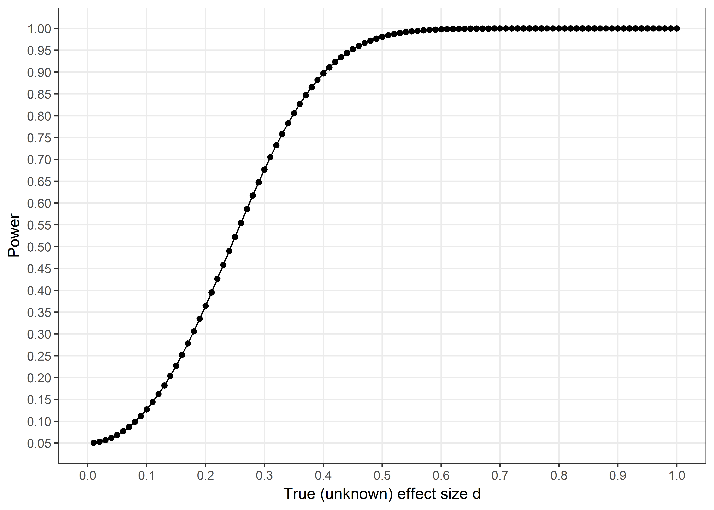
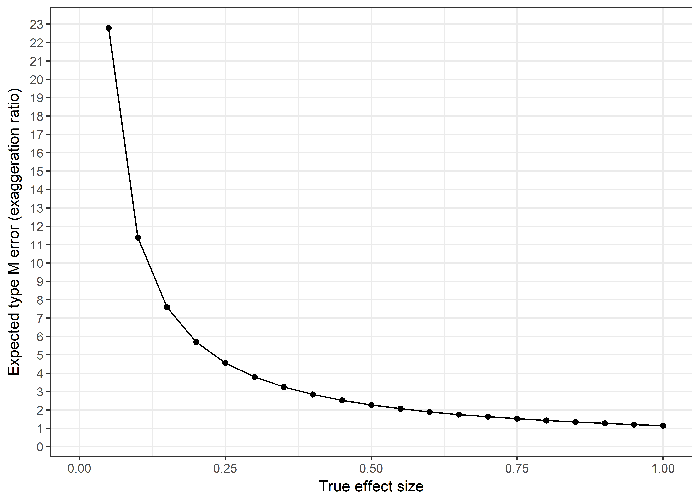
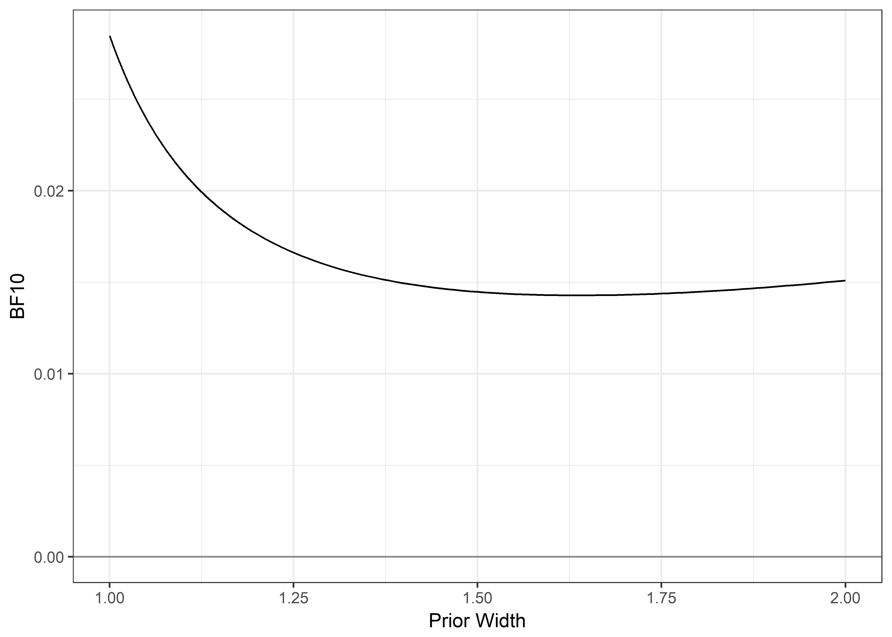
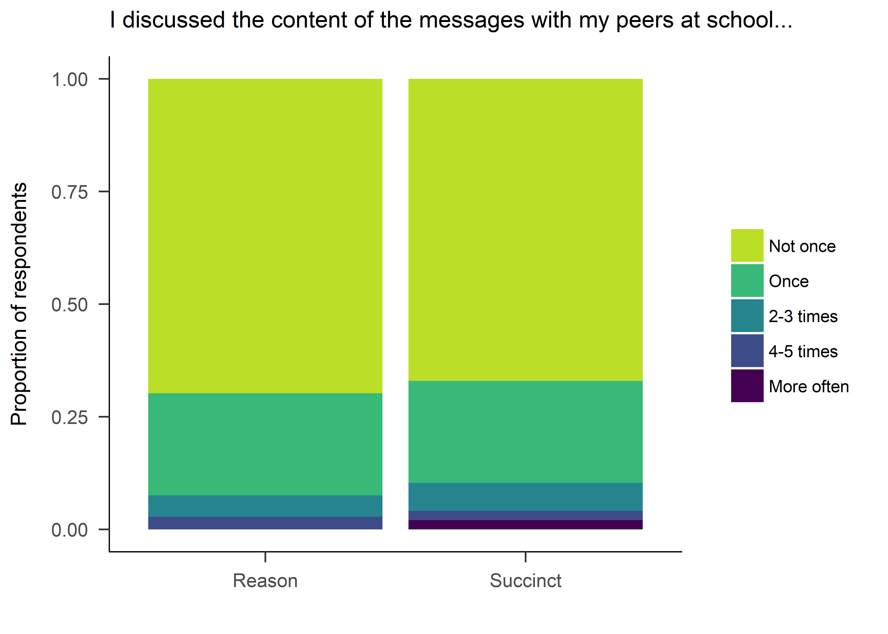
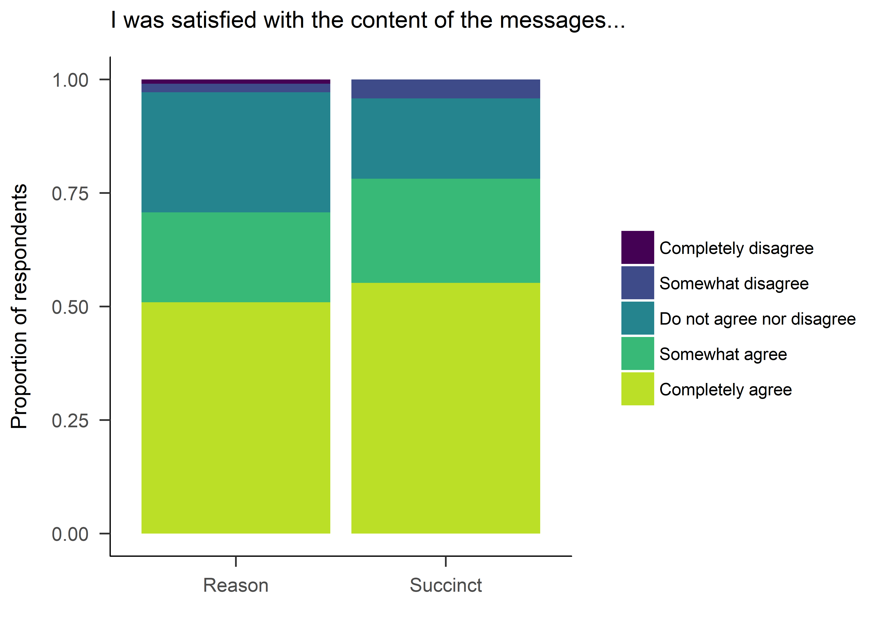
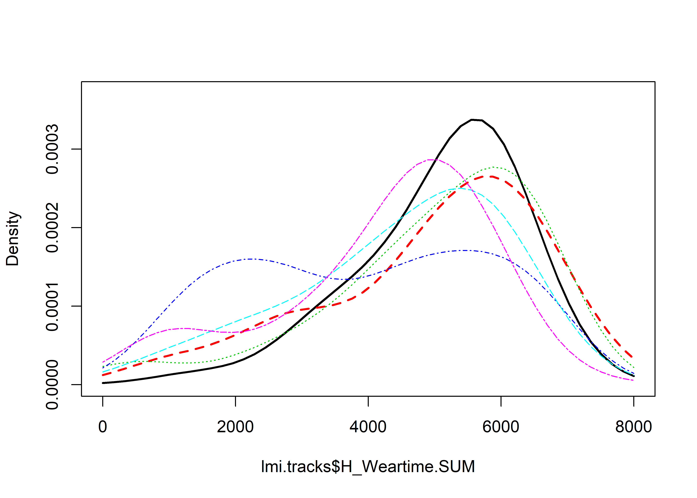
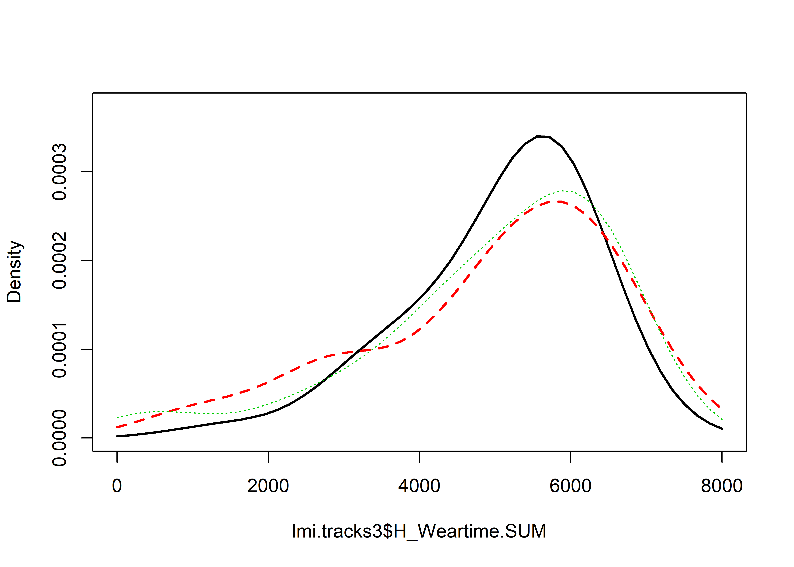

Welcome to the supplementary file!
Open code blocks by clicking the “code”-buttons on the right hand side.
Github repository for this site can be found here, the index page for this small site is here.
Load packages
The code block shows all installed packages and the session information of the computer this was run on.
if(!require("pacman")) install.packages("pacman")
library("pacman")
p_load(viridis, tidyverse, userfriendlyscience, MASS, BayesFactor, car, mvtnorm, Rcpp, TOSTER, devtools, yarrr, dplyr, RColorBrewer, sm, hypergeo, nlme, pwr, lme4, broom, papaja)
# library(tidyverse)
devtools::session_info()## setting value
## version R version 3.4.3 (2017-11-30)
## system x86_64, mingw32
## ui RStudio (1.1.383)
## language (EN)
## collate Finnish_Finland.1252
## tz Europe/Helsinki
## date 2017-12-20
##
## package * version date
## assertthat 0.2.0 2017-04-11
## backports 1.1.1 2017-09-25
## base * 3.4.3 2017-12-06
## BayesFactor * 0.9.12-2 2015-09-19
## BiasedUrn 1.07 2015-12-28
## bindr 0.1 2016-11-13
## bindrcpp * 0.2 2017-06-17
## BiocInstaller * 1.28.0 2017-10-31
## brew 1.0-6 2011-04-13
## broom * 0.4.3 2017-11-20
## car * 2.1-6 2017-11-19
## cellranger 1.1.0 2016-07-27
## circlize * 0.4.2 2017-11-18
## cli 1.0.0 2017-11-05
## coda * 0.19-1 2016-12-08
## codetools 0.2-15 2016-10-05
## colorspace 1.3-2 2016-12-14
## compiler 3.4.3 2017-12-06
## contfrac 1.1-11 2017-07-09
## crayon 1.3.4 2017-09-16
## curl 3.0 2017-10-06
## data.table 1.10.4-3 2017-10-27
## data.tree 0.7.3 2017-09-10
## datasets * 3.4.3 2017-12-06
## deSolve 1.20 2017-07-14
## devtools * 1.13.4 2017-11-09
## DiagrammeR 0.9.2 2017-09-06
## digest 0.6.12 2017-01-27
## diptest 0.75-7 2016-12-05
## downloader 0.4 2015-07-09
## dplyr * 0.7.4 2017-09-28
## elliptic 1.3-7 2016-05-26
## evaluate 0.10.1 2017-06-24
## fBasics 3042.89 2017-11-17
## forcats * 0.2.0 2017-01-23
## foreign 0.8-69 2017-06-22
## formatR * 1.5 2017-04-25
## GGally 1.3.2 2017-08-02
## ggplot2 * 2.2.1 2016-12-30
## ggrepel 0.7.0 2017-09-29
## ggridges 0.4.1 2017-09-15
## git2r 0.19.0 2017-07-19
## GlobalOptions 0.0.12 2017-05-21
## glue 1.2.0 2017-10-29
## GPArotation 2014.11-1 2014-11-25
## graphics * 3.4.3 2017-12-06
## grDevices * 3.4.3 2017-12-06
## grid 3.4.3 2017-12-06
## gridExtra 2.3 2017-09-09
## gtable 0.2.0 2016-02-26
## gtools 3.5.0 2015-05-29
## haven 1.1.0 2017-07-09
## hms 0.4.0 2017-11-23
## htmltools 0.3.6 2017-04-28
## htmlwidgets 0.9 2017-07-10
## httr 1.3.1 2017-08-20
## hypergeo * 1.2-13 2016-04-07
## igraph 1.1.2 2017-07-21
## influenceR 0.1.0 2015-09-03
## inline 0.3.14 2015-04-13
## jpeg * 0.1-8 2014-01-23
## jsonlite 1.5 2017-06-01
## knitr 1.17 2017-08-10
## labeling 0.3 2014-08-23
## lattice 0.20-35 2017-03-25
## lavaan 0.5-23.1097 2017-02-24
## lazyeval 0.2.1 2017-10-29
## lme4 * 1.1-14 2017-09-27
## loo * 1.1.0 2017-03-27
## lubridate 1.7.1 2017-11-03
## magrittr 1.5 2014-11-22
## MASS * 7.3-47 2017-02-26
## Matrix * 1.2-12 2017-11-20
## MatrixModels 0.4-1 2015-08-22
## matrixStats 0.52.2 2017-04-14
## MBESS 4.4.1 2017-11-01
## memoise 1.1.0 2017-04-21
## methods * 3.4.3 2017-12-06
## mgcv 1.8-22 2017-09-24
## minpack.lm 1.2-1 2016-11-20
## minqa 1.2.4 2014-10-09
## mnormt 1.5-5 2016-10-15
## modelr 0.1.1 2017-07-24
## munsell 0.4.3 2016-02-13
## mvtnorm * 1.0-6 2017-03-02
## nlme * 3.1-131 2017-02-06
## nloptr 1.0.4 2014-08-04
## nnet 7.3-12 2016-02-02
## openxlsx 4.0.17 2017-03-23
## pacman * 0.4.6 2017-05-14
## pander 0.6.1 2017-08-06
## papaja * 0.1.0.9492 2017-11-28
## parallel * 3.4.3 2017-12-06
## pbapply 1.3-3 2017-07-04
## pbivnorm 0.6.0 2015-01-23
## pbkrtest 0.4-7 2017-03-15
## pkgconfig 2.0.1 2017-03-21
## plyr 1.8.4 2016-06-08
## psych 1.7.8 2017-09-09
## purrr * 0.2.4 2017-10-18
## pwr * 1.2-1 2017-03-25
## quadprog 1.5-5 2013-04-17
## quantreg 5.34 2017-10-25
## R6 2.2.2 2017-06-17
## RColorBrewer * 1.1-2 2014-12-07
## Rcpp * 0.12.14 2017-11-23
## readr * 1.1.1 2017-05-16
## readxl 1.0.0 2017-04-18
## reshape 0.8.7 2017-08-06
## reshape2 1.4.2 2016-10-22
## rethinking * 1.59 2017-12-19
## rgexf 0.15.3 2015-03-24
## rio 0.5.5 2017-06-18
## rlang 0.1.4 2017-11-05
## rmarkdown 1.8 2017-11-17
## Rook 1.1-1 2014-10-20
## rprojroot 1.2 2017-01-16
## rstan * 2.16.2 2017-07-03
## rstudioapi 0.7 2017-09-07
## rvest 0.3.2 2016-06-17
## scales 0.5.0 2017-08-24
## SCRT 1.2.1 2017-06-01
## shape 1.4.3 2017-08-16
## sm * 2.2-5.4 2014-01-16
## SparseM 1.77 2017-04-23
## spatial 7.3-11 2015-08-30
## splines 3.4.3 2017-12-06
## StanHeaders * 2.16.0-1 2017-07-03
## stats * 3.4.3 2017-12-06
## stats4 3.4.3 2017-12-06
## stringi 1.1.6 2017-11-17
## stringr * 1.2.0 2017-02-18
## SuppDists 1.1-9.4 2016-09-23
## tibble * 1.3.4 2017-08-22
## tidyr * 0.7.2 2017-10-16
## tidyverse * 1.2.1 2017-11-14
## timeDate 3042.101 2017-11-16
## timeSeries 3042.102 2017-11-17
## tools 3.4.3 2017-12-06
## TOSTER * 0.3 2017-11-15
## userfriendlyscience * 0.7.0 2017-11-17
## utils * 3.4.3 2017-12-06
## viridis * 0.4.0 2017-03-27
## viridisLite * 0.2.0 2017-03-24
## visNetwork 2.0.1 2017-07-30
## withr 2.1.0 2017-11-01
## XML 3.98-1.9 2017-06-19
## xml2 1.1.1 2017-01-24
## xtable 1.8-2 2016-02-05
## yaml 2.1.15 2017-12-01
## yarrr * 0.1.5 2017-04-19
## source
## CRAN (R 3.4.2)
## CRAN (R 3.4.1)
## local
## CRAN (R 3.4.3)
## CRAN (R 3.4.1)
## CRAN (R 3.4.2)
## CRAN (R 3.4.2)
## Bioconductor
## CRAN (R 3.4.1)
## CRAN (R 3.4.2)
## CRAN (R 3.4.2)
## CRAN (R 3.4.2)
## CRAN (R 3.4.3)
## CRAN (R 3.4.2)
## CRAN (R 3.4.2)
## CRAN (R 3.4.3)
## CRAN (R 3.4.2)
## local
## CRAN (R 3.4.1)
## CRAN (R 3.4.2)
## CRAN (R 3.4.2)
## CRAN (R 3.4.2)
## CRAN (R 3.4.3)
## local
## CRAN (R 3.4.1)
## CRAN (R 3.4.2)
## CRAN (R 3.4.3)
## CRAN (R 3.4.2)
## CRAN (R 3.4.1)
## CRAN (R 3.4.2)
## CRAN (R 3.4.2)
## CRAN (R 3.4.3)
## CRAN (R 3.4.2)
## CRAN (R 3.4.3)
## CRAN (R 3.4.2)
## CRAN (R 3.4.3)
## CRAN (R 3.4.3)
## CRAN (R 3.4.3)
## CRAN (R 3.4.2)
## CRAN (R 3.4.3)
## CRAN (R 3.4.3)
## CRAN (R 3.4.2)
## CRAN (R 3.4.3)
## CRAN (R 3.4.2)
## CRAN (R 3.4.1)
## local
## local
## local
## CRAN (R 3.4.2)
## CRAN (R 3.4.2)
## CRAN (R 3.4.1)
## CRAN (R 3.4.2)
## CRAN (R 3.4.2)
## CRAN (R 3.4.2)
## CRAN (R 3.4.2)
## CRAN (R 3.4.2)
## CRAN (R 3.4.3)
## CRAN (R 3.4.2)
## CRAN (R 3.4.3)
## CRAN (R 3.4.2)
## CRAN (R 3.4.1)
## CRAN (R 3.4.2)
## CRAN (R 3.4.2)
## CRAN (R 3.4.1)
## CRAN (R 3.4.3)
## CRAN (R 3.4.2)
## CRAN (R 3.4.2)
## CRAN (R 3.4.2)
## CRAN (R 3.4.2)
## CRAN (R 3.4.2)
## CRAN (R 3.4.2)
## CRAN (R 3.4.3)
## CRAN (R 3.4.3)
## CRAN (R 3.4.2)
## CRAN (R 3.4.2)
## CRAN (R 3.4.2)
## CRAN (R 3.4.2)
## local
## CRAN (R 3.4.3)
## CRAN (R 3.4.3)
## CRAN (R 3.4.2)
## CRAN (R 3.4.1)
## CRAN (R 3.4.2)
## CRAN (R 3.4.2)
## CRAN (R 3.4.1)
## CRAN (R 3.4.3)
## CRAN (R 3.4.2)
## CRAN (R 3.4.3)
## CRAN (R 3.4.3)
## CRAN (R 3.4.2)
## CRAN (R 3.4.3)
## Github (crsh/papaja@ede6845)
## local
## CRAN (R 3.4.1)
## CRAN (R 3.4.1)
## CRAN (R 3.4.2)
## CRAN (R 3.4.2)
## CRAN (R 3.4.2)
## CRAN (R 3.4.2)
## CRAN (R 3.4.2)
## CRAN (R 3.4.3)
## CRAN (R 3.4.1)
## CRAN (R 3.4.2)
## CRAN (R 3.4.2)
## CRAN (R 3.4.1)
## CRAN (R 3.4.2)
## CRAN (R 3.4.2)
## CRAN (R 3.4.2)
## CRAN (R 3.4.3)
## CRAN (R 3.4.2)
## Github (rmcelreath/rethinking@1def057)
## CRAN (R 3.4.3)
## CRAN (R 3.4.3)
## CRAN (R 3.4.2)
## CRAN (R 3.4.2)
## CRAN (R 3.4.1)
## CRAN (R 3.4.2)
## CRAN (R 3.4.2)
## CRAN (R 3.4.2)
## CRAN (R 3.4.2)
## CRAN (R 3.4.2)
## CRAN (R 3.4.1)
## CRAN (R 3.4.1)
## CRAN (R 3.4.3)
## CRAN (R 3.4.1)
## CRAN (R 3.4.3)
## local
## CRAN (R 3.4.2)
## local
## local
## CRAN (R 3.4.2)
## CRAN (R 3.4.2)
## CRAN (R 3.4.1)
## CRAN (R 3.4.2)
## CRAN (R 3.4.2)
## CRAN (R 3.4.2)
## CRAN (R 3.4.2)
## CRAN (R 3.4.3)
## local
## CRAN (R 3.4.3)
## CRAN (R 3.4.3)
## local
## CRAN (R 3.4.2)
## CRAN (R 3.4.2)
## CRAN (R 3.4.3)
## CRAN (R 3.4.2)
## CRAN (R 3.4.1)
## CRAN (R 3.4.2)
## CRAN (R 3.4.2)
## CRAN (R 3.4.3)
## CRAN (R 3.4.3)Data wrangling
The code block loads data and creates the relevant variables.
lmi <- read_csv("./sms-persuasion-data.csv")
# Recruitment wave
names(lmi)[1] <- "id"
lmi <- lmi %>% dplyr::mutate(batch = factor(ifelse(id < 1000, "1",
ifelse (id > 1000 & id < 2000, "2",
ifelse (id >=9000 & id <= 9026, "1",
"2")))))
lmi$gender <- factor(lmi$q0005, levels=c(1,2), labels=c("Boy","Girl"))
lmi <- lmi %>% dplyr::mutate(girl = factor(ifelse(gender == "Girl", "1",
ifelse(gender == "Boy", "0", NA))))
# SMS-group as a FACTOR:
lmi$SMSg <- factor(lmi$SMS_group, levels=c(1,2,3,4), labels=c("Reason","Succinct","No SMS","Failed to send"))
lmi$SMSg2 <- factor(lmi$SMS_group, levels=c(1,2), labels=c("Reason","Succinct"))
lmi$SMSg3 <- factor(lmi$SMS_group, levels=c(1,2,3), labels=c("Reason (n=133)","Succinct (n=135)","Opt out (n=83)"))
lmi$SMSg4 <- factor(lmi$SMS_group_optinvsoptout, levels=c(1,2), labels=c("Opt in","Opt out"))
lmi$SMSgall <- factor(lmi$SMS_group, levels=c(1,2,3,4), labels=c("Reason", "Succinct", "Opt out", "Send failed"))Methods
Interpreting Bayes Factors
In Bayesian philosophy, probabilities are conceived as quantified beliefs, instead of hypothetical long-run frequencies. A Bayes Factor BF10 (BF01) indicates how much prior odds should be shifted towards the alternative (null) hypothesis, in the light of the data: BF10 = \(\frac {p(data, given H1)} {p(data, given H0)}\). When prior odds \(\frac {p(H1)} {p(H0)}\) are multiplied by the BF, it results as the posterior odds. As an example, take a modestly skeptical scientist, who holds 1:3 odds against the alternative hypothesis, corresponding to a 25% posterior probability. After observing data that indicate a BF10 of 15 (or a BF01 of 1/15), the scientist should shift his or her prior odds to become \(\frac {1} {3} * \frac {15} {1}\) = 15:3 or 5:1, now favoring the alternative hypothesis with a posterior probability of \(\frac {5} {6}\) = 83%.
Although considered sufficient in some contexts (e.g. FMRI-studies, where data collection is extremely costly), we share Etz and Vandekerckhove’s* concern about a BF of 3 not indicating much evidence. A BF10 of three would lead a scientist from 1:1 odds (or 50% probability) to 3:1 odds (or 75% probability); still with the same probability of erring as drawing a heart from a deck of cards.
- Etz A, Vandekerckhove J. A Bayesian Perspective on the Reproducibility Project: Psychology. PLOS ONE. 2016 Feb 26;11(2):e0149794.
Study design
Statistical Power
Our final sample size was unknown, as well as (in the absence of similar studies) the true effect size, so sample size planning according to the expected effect was out of the question. Our aim was to collect as many participants as possible during the available time during the two recruitment waves. We defined a clinically significant effect size by calculating, how big an effect would bring a person from 9.5 hours of daily data to reach the cutoff of 10 hours. This was defined as \[d=\frac{M1 - M2} {\sqrt{\frac {s_1^2+s_2^2} {2}} }\] \(^{(1)}\) with standard deviations estimated from feasibility study\(^{(2)}\) data to be 72 minutes for both groups, resulting in a d=0.42. For our purposes, we decided to consider effect sizes between -0.3 and 0.3 as equivalent to zero.
\(^{(1)}\) Cohen J. A power primer. Psychol Bull. 1992 Jul;112(1):155-9.
\(^{(2)}\) Hankonen N, Heino MTJ, Hynynen S-T, Laine H, Ara?jo-Soares V, Sniehotta FF, et al. Randomised controlled feasibility study of a school-based multi-level intervention to increase physical activity and decrease sedentary behaviour among vocational school students. Int J Behav Nutr Phys Act. Available from: http://ijbnpa.biomedcentral.com/articles/10.1186/s12966-017-0484-0
xax <- seq(from = 0.01, to = 1, by = 0.01)
graafi <- pwr.t.test(n = (133 + 129)/2, d = xax, sig.level = 0.05, power = NULL, type = "two.sample", alternative = "two.sided")
qplot(xax, graafi$power) +
geom_point() +
geom_line() +
xlab("True (unknown) effect size d") +
ylab("Power") +
scale_y_continuous(breaks = seq(0, 1, .05), minor_breaks = seq(0 , 1, .05))+
theme(axis.text=element_text(size=12), axis.title=element_text(size=14,face="bold")) +
scale_x_continuous(breaks = seq(0, 1, .1), minor_breaks = seq(0 , 1, .1), limits = c(0, 1))+
theme_bw()
fAnalysis regarding statistical power is presented in Figure above, holding alpha constant at 0.05 and sample size at achieved levels. As seen from the figure, we had 90% power to discover an effect of size d=0.39, 80% to detect d=0.3, 60% to detect d=0.27 and 40% to discover an effect of d=0.21. Thus, type 2 error probabilities were small for effects near our defined minimal effect size of interest, but high for small effects.
Type S and Type M errors
Gelman and Carlin (54) propose going beyond type 1 and type 2 errors by assessing the risks of observing a result of the wrong sign (“type S error”) and of an overstated magnitude (exaggeration ratio; “type M error”). The underlying philosophy relates to the fact that, should a low-powered design produce a “significant” result, the observed effect size is very likely to be unstable, i.e. of the wrong sign and of an overstated magnitude. This, in turn is a result of the tautology that if an effect size is large by chance, it is also more likely to observe p < alpha.
The reference is:
Gelman, A., & Carlin, J. (2014). Beyond Power Calculations Assessing Type S (Sign) and Type M (Magnitude) Errors. Perspectives on Psychological Science, 9(6), 641-651. http://doi.org/10.1177/1745691614551642
retrodesign <- function(A, s, alpha=.05, df=Inf, n.sims=10000){
z <- qt(1-alpha/2, df)
p.hi <- 1 - pt(z-A/s, df)
p.lo <- pt(-z-A/s, df)
power <- p.hi + p.lo
typeS <- p.lo/power
estimate <- A + s*rt(n.sims,df)
significant <- abs(estimate) > s*z
exaggeration <- mean(abs(estimate)[significant])/A
return(list(power=power, typeS=typeS, exaggeration=exaggeration))
}Note: standard error formula for d was acquired from slide 9 (on p. 5) of this Cambell Collaboration document.
## Create a vector of possible effect sizes for the x-axis:
xax <- seq(from = 0.05, to = 2, by = 0.05)
## Calculate the SE of d in this particular case:
n1 <- 133
n2 <- 129
sed <- sqrt((n1+n2)/(n1*n2)+(xax^2)/(2*(n1+n2)))
retroPow <- (retrodesign(xax, sed)$power)
# qplot(xax, retroPow) +
# geom_point() +
# geom_line() +
# xlab("True (unknown) effect size d") +
# ylab("Power") +
# scale_y_continuous(breaks = seq(0, 1, .05), minor_breaks = seq(0 , 1, .05))+
# theme(axis.text=element_text(size=12), axis.title=element_text(size=14,face="bold")) +
# scale_x_continuous(breaks = seq(0, 1, .1), minor_breaks = seq(0 , 1, .1), limits = c(0, 1))+
# theme_bw()Exaggeration ratio (type M error)
Figure below shows our expected exaggeration ratio for different hypothetical true effect sizes.
retroExg <- (retrodesign(xax, sed)$exaggeration)
qplot(xax, retroExg) +
ylim(0,30) +
xlim(0, 1) +
geom_point() +
geom_line() +
xlab("True effect size") +
ylab("Expected type M error (exaggeration ratio)") +
scale_y_continuous(breaks = seq(0, 30, 1), minor_breaks = seq(0 , 30, 1))+
theme(axis.text=element_text(size=12), axis.title=element_text(size=14,face="bold")) +
theme_bw()
This figure shows how, given a detected nonzero true effect, we are expected to observe a grossly exaggerated estimate for very small (\(d = 0.1\)) effects. Even for the effects of interest to us, a threefold exaggeration in size would be expected.
Probability of wrong sign (type S error)
As can be seen from the figure below, our type S error rate remains very small, even for very small effect sizes. Should we detect an effect, we could thus be relatively confident with its sign.
retroS <- (retrodesign(xax, sed)$typeS)
qplot(xax, retroS) +
ylim(0,40) +
xlim(0, 1) +
geom_point() +
geom_line() +
xlab("True effect size") +
ylab("Expected type S error: p(wrong sign)") +
scale_y_continuous(breaks = seq(0, 0.2, .025), minor_breaks = seq(0 , 0.2, .025))+
theme(axis.text=element_text(size=12), axis.title=element_text(size=14,face="bold"))+
theme_bw()Evaluating the v-statistic
The “v-statistic” (55) is an indication of how accurately data estimates corresponding population parameter values. A v of 0.50 represents random guessing accuracy. Cohen (56) suggests r=0.1 (and thus, r2=0.01) as the lower limit of a “small effect”.
Code below is adapted from Daniel Lakens’ blog.
#Lakens:
#"Below, I'm vectorizing the function so that I can plot curves.
#The rest is unchanged from the vstat function by Stober-Davis & Dana.
#If you want to use R unbiased, remove the # before the Rsq adjustment calculation below"
vstat <- Vectorize(function(n,p,Rsq)
{
Rsq = Re(1-((n-2)/(n-p))*(1-Rsq)*hypergeo(1,1,(n-p+2)*.5,1-Rsq))
if (Rsq<=0) {Rsq = .0001}
r = ((p-1)*(1-Rsq))/((n-p)*Rsq)
g = min(r,1)
if (g<.5001 && g>.4999) {g = .5001}
z = (g - sqrt(g-g^2))/(2*g - 1)
alpha = acos((1-z)/sqrt(1-2*z*(1-z)))
v = Re((((2*cos(alpha)*gamma((p+2)/2))/(sqrt(pi)*gamma((p+1)/2)))*(hypergeo(.5,(1-p)/2, 3/2, cos(alpha)^2) - sin(alpha)^(p-1))))
return(v)
}
)
## Plot it:
curve(vstat(Rsq=x, n=133+129+83+7, p=2), 0.01, 0.25, type="l", col="purple", ylim=c(0, 1), xlab="R-squared when Estimating 2 Parameters", lty=1, ylab="v-statistic")
par(new=TRUE)
curve(vstat(Rsq=x, n=133+129, p=2), 0.01, 0.25, type="l", col="green", ylim=c(0, 1), xaxt = "n", yaxt = "n", xlab="", ylab="", lty=2)
par(new=TRUE)
# Horizontal line at 0.5 cut-off
abline(h=0.5, col="azure4", lty=5)
# Legend
legend(0.05,0.4,c("Reminder (n=262) v. no reminder (n=90)","Reason (n=133) v. Succinct (n=129)"), lty=c(1,2), lwd=c(2.5,2.5), col=c("purple", "green"))The figure shows the v-statistic when estimating two parameters (two medians, in our case), where 0.5 represents guessing. Figure reveals our sample size was inadequate for reliably detecting small effects. It illustrates that our design for comparison of two medians only starts superseding random guessing near \(r^{2} = 0.03\), and approaches 0.8 at \(r^{2} \approx 0.10\) (a “medium” effect by Cohen’s indices). This illustrates the fact that–if the effect is small instead of zero–to make reliable estimates, one needs much larger sample sizes than what we were able to gather for this research. For “medium”-sized effects, our design was satisfactory.
Results
Implementation measures
Reading the messages
reading <- lmi %>% select(SMS_read, SMSg2) %>%
mutate(SMS_read = factor(SMS_read))
levels(reading$SMS_read) <- c("Not on a single morning", "On a single morning", "On 2-3 mornings", "On 4-5 mornings", "Every morning")
names(reading$SMS_read) <- "I opened the SMS and read it on the morning it was sent..."
reading <- reading %>% filter(complete.cases(.))
ggplot(reading) +
aes(x = SMSg2, fill = factor(SMS_read)) +
geom_bar(position = "fill") +
labs(title = "I opened the SMS and read it on the morning it was sent...", x = "", y = "Proportion of respondents") +
theme_apa() +
scale_fill_viridis(name = "", end = 0.90, discrete = TRUE)
## Old plot attempt:
# par(mar=c(2, 1, 3, 3)) # Sets the bottom, left, top and right margins
# layout(matrix(1:2, 2, 1, byrow=TRUE), heights=c(1, 0.2))
# spineplot(SMS_read ~ SMSg2, data = reading, col = (viridis(5)), ylab = "%", yaxt="n", xlab="", yaxlabels = "", main = "I opened the SMS and read it on the morning it was sent...")
#
# par(mar=c(0, 1, 0, 1)) # Reduce plot margins
# plot.new()
# legend(x = "center", legend = c(levels(reading$SMS_read)), fill = viridis(5), cex = 0.75, box.lty = 0, ncol = 2)Test for difference between groups
chisq.test(lmi$SMS_read, lmi$SMSg2)##
## Pearson's Chi-squared test
##
## data: lmi$SMS_read and lmi$SMSg2
## X-squared = 1.3564, df = 4, p-value = 0.8517# Create data matrix for Bayesian contingency tables:
table.readbf <- table(data.frame(lmi$SMS_read, lmi$SMSg2))
# Bayes factor for the contingency tables with default prior concentration:
readbf <- contingencyTableBF(table.readbf, sampleType = "poisson")
cat(c("Bayes Factor BF10:", round(extractBF(readbf)$bf, 5)))## Bayes Factor BF10: 0.02846# Create a vector of different prior concentrations:
priorWidths <- c(seq(1, 1.25, by = 0.001), seq(1.25, 2, by = 0.01))
# Save the BFs calculated w/ each concentration:
bayesFactors <- sapply(priorWidths, function(ownprior) {
extractBF(contingencyTableBF(table.readbf, sampleType = "poisson", priorConcentration = ownprior))$bf
})
# Make a data frame for ggplot
plotdf <- data.frame(priorWidths, bayesFactors)
# Plot BFs with different priors:
plot1 <- ggplot(data = plotdf, aes(x = priorWidths, y = bayesFactors, group = 1)) +
ylim(0, max(bayesFactors)) +
xlim(1, 2) +
geom_line() +
geom_hline(yintercept = 0, colour = "azure4") +
xlab("Prior Width") +
ylab("BF10") +
theme_bw()
plot2 <- plot1 + geom_hline(yintercept = 1/10, linetype = "dashed", colour = "darkgrey")
plot2 + geom_hline(yintercept = 10, linetype = "dashed", colour = "darkgrey") 
Discussing the messages
discussing <- lmi %>% select(SMS_contam, SMSg2) %>%
mutate(SMS_contam = factor(SMS_contam))
levels(discussing$SMS_contam) <- c("Not once", "Once", "2-3 times", "4-5 times", "More often")
names(discussing$SMS_contam) <- "I discussed the content of the messages with my peers at school..."
discussing <- discussing %>% filter(complete.cases(.))
ggplot(discussing) +
aes(x = SMSg2, fill = factor(SMS_contam)) +
geom_bar(position = "fill") +
labs(title = "I discussed the content of the messages with my peers at school...", x = "", y = "Proportion of respondents") +
theme_apa() +
scale_fill_viridis(name = "", end = 0.9, discrete = TRUE, direction = -1)
## Old plot:
# par(mar=c(2, 1, 4, 3)) # Sets the bottom, left, top and right margins
# layout(matrix(1:2, 2, 1, byrow=TRUE), heights=c(1, 0.2))
# spineplot(SMS_contam ~ SMSg2, data = discussing, col = rev(viridis(5)), ylab = "%", yaxt="n", xlab="", yaxlabels = "", main = "I discussed the content of the messages \n with my peers at school...")
#
# par(mar=c(0, 1, 0, 1)) # Reduce plot margins
# plot.new()
# legend(x = "center", legend = c(levels(discussing$SMS_contam)), fill = rev(viridis(5)), cex = 0.75, box.lty = 0, ncol = 2)Test for differences in discussion
chisq.test(lmi$SMS_contam, lmi$SMSg2)##
## Pearson's Chi-squared test
##
## data: lmi$SMS_contam and lmi$SMSg2
## X-squared = 2.5666, df = 4, p-value = 0.6327# Create data matrix for Bayesian contingency tables:
table.contambf <- table(data.frame(lmi$SMS_contam, lmi$SMSg2))
# Bayes factor for the contingency tables with default prior concentration:
contambf <- contingencyTableBF(table.contambf, sampleType = "poisson")
cat(c("Bayes Factor BF10:", round(extractBF(contambf)$bf, 5)))## Bayes Factor BF10: 0.01093# Create a vector of different prior concentrations:
priorWidths <- c(seq(1, 1.25, by = 0.001), seq(1.25, 2, by = 0.01))
# Save the BFs calculated w/ each concentration:
bayesFactors <- sapply(priorWidths, function(ownprior) {
extractBF(contingencyTableBF(table.contambf, sampleType = "poisson", priorConcentration = ownprior))$bf
})
# Make a data frame for ggplot
plotdf <- data.frame(priorWidths, bayesFactors)
# Plot BFs with different priors:
plot1 <- ggplot(data = plotdf, aes(x = priorWidths, y = bayesFactors, group = 1)) +
ylim(0, max(bayesFactors)) +
xlim(1, 2) +
geom_line() +
geom_hline(yintercept = 0, colour = "azure4") +
xlab("Prior Width") +
ylab("BF10") +
theme_bw()
plot2 <- plot1 + geom_hline(yintercept = 1/10, linetype = "dashed", colour = "darkgrey")
plot2 + geom_hline(yintercept = 10, linetype = "dashed", colour = "darkgrey") Satisfaction with the messages
lmi$satisf <- "I was satisfied with the content of the messages"
satisfaction <- lmi %>% select(SMS_satisf, SMSg2) %>%
mutate(SMS_satisf = factor(SMS_satisf))
levels(satisfaction$SMS_satisf) <- c("Completely disagree", "Somewhat disagree", "Do not agree nor disagree", "Somewhat agree", "Completely agree")
satisfaction <- satisfaction %>% filter(complete.cases(.))
ggplot(satisfaction) +
aes(x = SMSg2, fill = factor(SMS_satisf)) +
geom_bar(position = "fill") +
labs(title = "I was satisfied with the content of the messages...", x = "", y = "Proportion of respondents") +
theme_apa() +
scale_fill_viridis(name = "", end = 0.90, discrete = TRUE)
## Previous attempt at the plot:
# par(mar=c(2, 1, 3, 3)) # Sets the bottom, left, top and right margins
# layout(matrix(1:2, 2, 1, byrow=TRUE), heights=c(1, 0.2))
# spineplot(SMS_satisf ~ SMSg2, data = satisfaction, col = viridis(5), ylab = "%", yaxt="n", xlab="", yaxlabels = "", main = "I was satisfied with the content of the messages...")
#
# par(mar=c(0, 1, 0, 1)) # Reduce plot margins
# plot.new()
# legend(x = "center", legend = c(levels(satisfaction$SMS_satisf)), fill = brewer.pal(5, "Spectral"), cex = 0.75, box.lty = 0, ncol = 2)Test for differences in satisfaction:
chisq.test(lmi$SMS_satisf, lmi$SMSg2)##
## Pearson's Chi-squared test
##
## data: lmi$SMS_satisf and lmi$SMSg2
## X-squared = 3.9027, df = 4, p-value = 0.4193# Create data matrix for Bayesian contingency tables:
table.satisfbf <- table(data.frame(lmi$SMS_satisf, lmi$SMSg2))
# Bayes factor for the contingency tables with default prior concentration:
satisfbf <- contingencyTableBF(table.satisfbf, sampleType = "poisson")
cat(c("Bayes Factor BF10:", round(extractBF(satisfbf)$bf, 5)))## Bayes Factor BF10: 0.03161# Create a vector of different prior concentrations:
priorWidths <- c(seq(1, 1.25, by = 0.001), seq(1.25, 2, by = 0.01))
# Save the BFs calculated w/ each concentration:
bayesFactors <- sapply(priorWidths, function(ownprior) {
extractBF(contingencyTableBF(table.satisfbf, sampleType = "poisson", priorConcentration = ownprior))$bf
})
# Make a data frame for ggplot
plotdf <- data.frame(priorWidths, bayesFactors)
# Plot BFs with different priors:
plot1 <- ggplot(data = plotdf, aes(x = priorWidths, y = bayesFactors, group = 1)) +
ylim(0, max(bayesFactors)) +
xlim(1, 2) +
geom_line() +
geom_hline(yintercept = 0, colour = "azure4") +
xlab("Prior Width") +
ylab("BF10") +
theme_bw()
plot2 <- plot1 + geom_hline(yintercept = 1/10, linetype = "dashed", colour = "darkgrey")
plot2 + geom_hline(yintercept = 10, linetype = "dashed", colour = "darkgrey") Kernel density plots for total wear times
Code to set up the modified function
# Changing the sm density compare function to allow different color of the band of equality. Copied from https://web.archive.org/web/20170222214214/https://stat.ethz.ch/pipermail/r-help//2009-March/416920.html.
sm.density.compare2 <- function (x, group, h, model = "none", bandcol =
'cyan', lwd = par("lwd"), usePolyg = NULL, asp=NA,
xlab=opt$xlab, ylab=opt$ylab, ...)
{
if (!is.vector(x))
stop("sm.density.compare can handle only 1-d data")
opt <- sm.options(list(...))
sm:::replace.na(opt, ngrid, 50)
## These all changed from replace.na() --> sm:::
sm:::replace.na(opt, display, "line")
sm:::replace.na(opt, xlab, deparse(substitute(x)))
sm:::replace.na(opt, ylab, "Density")
sm:::replace.na(opt, xlim, c(min(x) - diff(range(x))/4, max(x) +
diff(range(x))/4))
sm:::replace.na(opt, eval.points, seq(opt$xlim[1], opt$xlim[2],
length = opt$ngrid))
if (is.na(opt$band)) {
if (model == "none")
opt$band <- FALSE
else opt$band <- TRUE
}
if ((model == "none") && opt$band)
opt$band <- FALSE
band <- opt$band
ngrid <- opt$ngrid
xlim <- opt$xlim
nboot <- opt$nboot
y <- x
if (is.na(opt$test)) {
if (model == "none")
opt$test <- FALSE
else opt$test <- TRUE
}
if ((model == "none") && opt$test)
opt$test <- FALSE
test <- opt$test
if (opt$display %in% "none")
band <- FALSE
fact <- factor(group)
fact.levels <- levels(fact)
nlev <- length(fact.levels)
ni <- table(fact)
if (band & (nlev > 2)) {
cat("Reference band available to compare two groups only.",
"\n")
band <- FALSE
}
if (length(opt$lty) < nlev)
opt$lty <- 1:nlev
if (length(opt$col) < nlev)
opt$col <- 2:(nlev + 1)
if (missing(h))
h <- h.select(x, y = NA, group = group, ...)
opt$band <- band
opt$test <- test
estimate <- matrix(0, ncol = opt$ngrid, nrow = nlev)
se <- matrix(0, ncol = opt$ngrid, nrow = nlev)
for (i in 1:nlev) {
sm <- sm.density(y[fact == fact.levels[i]], h = h, display = "none",
eval.points = opt$eval.points)
estimate[i, ] <- sm$estimate
se[i, ] <- sm$se
}
eval.points <- sm$eval.points
if (!(opt$display %in% "none" | band)) {
plot(xlim, c(0, 1.1 * max(as.vector(estimate))), xlab = opt$xlab,
ylab = opt$ylab, type = "n")
#for (i in 1:nlev) lines(eval.points, estimate[i, ], lty = opt$lty[i],
# col = opt$col[i])
for (i in 1:nlev) lines(eval.points, estimate[i, ], lty =
opt$lty[i], ## lwd hacked in
col = opt$col[i], lwd = lwd[i])
}
est <- NULL
p <- NULL
if (model == "equal" & test) {
if (nlev == 2) {
ts <- sum((estimate[1, ] - estimate[2, ])^2)
}
else {
sm.mean <- sm.density(y, h = h, xlim = opt$xlim,
ngrid = opt$ngrid, display = "none")$estimate
ts <- 0
for (i in 1:nlev) ts <- ts + ni[i] * sum((estimate[i,
] - sm.mean)^2)
}
p <- 0
est.star <- matrix(0, ncol = opt$ngrid, nrow = nlev)
for (iboot in 1:nboot) {
ind <- (1:length(y))
for (i in 1:nlev) {
indi <- sample((1:length(ind)), ni[i])
est.star[i, ] <- sm.density(y[ind[indi]], h = h,
ngrid = opt$ngrid, xlim = opt$xlim, display =
"none")$estimate
ind <- ind[-indi]
}
if (nlev == 2) {
ts.star <- sum((est.star[1, ] - est.star[2, ])^2)
}
else {
sm.mean <- sm.density(y, h = h, xlim = opt$xlim,
ngrid = opt$ngrid, display = "none")$estimate
ts.star <- 0
for (i in 1:nlev) {
ts.star <- ts.star + ni[i] * sum((est.star[i,
] - sm.mean)^2)
}
}
if (ts.star > ts)
p <- p + 1
if (opt$verbose > 1) {
cat(iboot)
cat(" ")
}
}
p <- p/nboot
cat("\nTest of equal densities: p-value = ", round(p,
3), "\n")
est <- list(p = p, h = h)
}
if (model == "equal" & band) {
av <- (sqrt(estimate[1, ]) + sqrt(estimate[2, ]))/2
se <- sqrt(se[1, ]^2 + se[2, ]^2)
upper <- (av + se)^2
lower <- pmax(av - se, 0)^2
plot(xlim, c(0, 1.1 * max(as.vector(estimate), upper)),
xlab = xlab, ylab = ylab, type = "n", asp=asp, ...)
## ... and asp added; was opt$xlab and opt$ylab
polygon(c(eval.points, rev(eval.points)), c(upper, rev(lower)),
col = bandcol, border = 0)
## was col = "cyan"
if (is.null(usePolyg)) {
lines(eval.points, estimate[1, ], lty = opt$lty[1], col =
opt$col[1], lwd = lwd[1])
lines(eval.points, estimate[2, ], lty = opt$lty[2], col =
opt$col[2], lwd = lwd[2])
}
else {
polygon(eval.points, estimate[1, ], lty = opt$lty[1], col =
opt$col[1], lwd = lwd[1])
polygon(eval.points, estimate[2, ], lty = opt$lty[2], col =
opt$col[2], lwd = lwd[2])
}
est <- list(p = p, upper = upper, lower = lower, h = h)
}
invisible(est)
}SMS types
Compare the effect of SMS types on total wear time
Total wear time in minutes (dashed line for the reason condition, solid for succinct). Grey band around the kernel density plots refers to 95% likelihood of containing the true density plot, if the two lines were generated by data from the same distribution.
# WEARTIME KERNEL: H_Weartime.SUM
lmix <- lmi %>% select(H_Weartime.SUM, SMSg2) %>% filter(complete.cases(.))
summary(lmix)## H_Weartime.SUM SMSg2
## Min. : 370.9 Reason :133
## 1st Qu.:3531.1 Succinct:129
## Median :4859.1
## Mean :4515.1
## 3rd Qu.:5807.8
## Max. :7442.5set.seed(100) # set random number generator for replicable results.
sm.density.compare2(lmix$H_Weartime.SUM, lmix$SMSg2, xlab="Minutes", col=c(1,2), lty=c(2,1), bandcol='LightGray', model="equal", lwd=(c(2,2)), xlim=c(0,8000))##
## Test of equal densities: p-value = 0.28title(main="")
colfill<-c(1,2)
legend("topleft", inset=.05, levels(lmi$SMSg2), fill=colfill)
MeanR <- mean(lmi$H_Weartime.SUM[which(lmi$SMS_group=="1")], na.rm=T)
MeanS <- mean(lmi$H_Weartime.SUM[which(lmi$SMS_group=="2")], na.rm=T)
MediR <- median(lmi$H_Weartime.SUM[which(lmi$SMS_group=="1")], na.rm=T)
MediS <- median(lmi$H_Weartime.SUM[which(lmi$SMS_group=="2")], na.rm=T)
SdR <- sd(lmi$H_Weartime.SUM[which(lmi$SMS_group=="1")], na.rm=T)
SdS <- sd(lmi$H_Weartime.SUM[which(lmi$SMS_group=="2")], na.rm=T)
legend("bottom", legend = c(paste("Mean (sd) Reason:", sep=""),
paste(round(MeanR, 2), " (", round(SdR, 2),")", "; n=", sum(!is.na(lmi$H_Weartime.SUM[which(lmi$SMS_group=="1")])), sep=""),
paste(" "),
paste("Mean (sd) Succinct:", sep=""),
paste(round(MeanS, 2), " (", round(SdS, 2),")", "; n=", sum(!is.na(lmi$H_Weartime.SUM[which(lmi$SMS_group=="2")])), sep="")),
bty = "n", cex=0.5)Opt in vs. opt out
Compare the wear times between those who received messages, and those who did not
lmix <- lmi %>% select(H_Weartime.SUM, SMSg4) %>% filter(complete.cases(.))
summary(lmix)## H_Weartime.SUM SMSg4
## Min. : 370.9 Opt in :262
## 1st Qu.:3463.5 Opt out: 83
## Median :4915.3
## Mean :4514.7
## 3rd Qu.:5810.0
## Max. :7442.5set.seed(100) # set random number generator for replicable results.
sm.density.compare2(lmix$H_Weartime.SUM, lmix$SMSg4, xlab="Minutes", col=c(1,2), lty=c(2,1), bandcol='LightGray', model="equal", lwd=(c(2,2)), xlim=c(0,8000))##
## Test of equal densities: p-value = 0.35title(main="")
colfill<-c(1,2)
legend("topleft", inset=.05, levels(lmi$SMSg4), fill=colfill)
MeanR <- mean(lmi$H_Weartime.SUM[which(lmi$SMSg4=="Opt in")], na.rm=T)
MeanS <- mean(lmi$H_Weartime.SUM[which(lmi$SMSg4=="Opt out")], na.rm=T)
MediR <- median(lmi$H_Weartime.SUM[which(lmi$SMSg4=="Opt in")], na.rm=T)
MediS <- median(lmi$H_Weartime.SUM[which(lmi$SMSg4=="Opt out")], na.rm=T)
SdR <- sd(lmi$H_Weartime.SUM[which(lmi$SMSg4=="Opt in")], na.rm=T)
SdS <- sd(lmi$H_Weartime.SUM[which(lmi$SMSg4=="Opt out")], na.rm=T)
legend("bottom", legend = c(paste("Mean (sd) Opt in:", sep=""),
paste(round(MeanR, 2), " (", round(SdR, 2),")", "; n=", sum(!is.na(lmi$H_Weartime.SUM[which(lmi$SMSg4=="Opt in")])), sep=""),
paste(" "),
paste("Mean (sd) Opt out:", sep=""),
paste(round(MeanS, 2), " (", round(SdS, 2),")", "; n=", sum(!is.na(lmi$H_Weartime.SUM[which(lmi$SMSg4=="Opt out")])), sep="")),
bty = "n", cex=0.5)Weartime minutes (Mann-Whitney U-tests)
# Mann-Whitney U-test
reasonsucc <- wilcox.test(lmi$H_Weartime.SUM ~ lmi$SMSg2, exact = TRUE, conf.int = TRUE, conf.level = 0.95, alternative = "two.sided")Reason vs. succinct message
W-statistic: 8860
Confidence interval: -280.9, 447.2
p-value: 0.647
schools <- wilcox.test(lmi$H_Weartime.SUM ~ lmi$iv, exact = TRUE, conf.int = TRUE, conf.level = 0.95, alternative = "two.sided")Schools
W-statistic: 17398.5
Confidence interval: -1.6, 619.6
p-value: 0.051
waves <- wilcox.test(lmi$H_Weartime.SUM ~ lmi$batch, exact = TRUE, conf.int = TRUE, conf.level = 0.95, alternative = "two.sided")Waves
W-statistic: 17310.5
Confidence interval: -19, 586.3
p-value: 0.067
optin <- wilcox.test(lmi$H_Weartime.SUM ~ lmi$SMSg4, exact = TRUE, conf.int = TRUE, conf.level = 0.95, alternative = "two.sided")Opting in for the reminders
W-statistic: 10642.5
Confidence interval: -424, 305
p-value: 0.771
Weartime (ANOVA, MANOVA)
ANOVA
Means and the total wear time distributions of the three groups. Error bars indicate 95% confidence intervals. No differences are detected.
userfriendlyscience::oneway(y=lmi$H_Weartime.SUM,
x=lmi$SMSg3,
means=TRUE, posthoc="holm", plot=TRUE, levene=TRUE)
## ### Oneway Anova for y=H_Weartime.SUM and x=SMSg3 (groups: Reason (n=133), Succinct (n=135), Opt out (n=83))
##
## Omega squared: 95% CI = [NA; 0], point estimate = -.01
## Eta Squared: 95% CI = [0; 0], point estimate = 0
##
## SS Df MS F p
## Between groups (error + effect) 320392.32 2 160196.16 0.06 .942
## Within groups (error only) 923850181.99 342 2701316.32
##
## ### Means for y (H_Weartime.SUM) separate for each level of x (SMSg3):
##
## SMSg3 = Reason (n=133):
## n mean sd median se
## 133 4550 1642 4909 142
##
## SMSg3 = Succinct (n=135):
## n mean sd median se
## 129 4480 1616 4808 142
##
## SMSg3 = Opt out (n=83):
## n mean sd median se
## 83 4513 1688 5067 185
##
## ### Levene's test for homogeneity of variance:
##
## F[2, 342] = 0.93, p = .396.
##
## ### Post hoc test: holm
##
## Reason (n=133) Succinct (n=135)
## Succinct (n=135) 1
## Opt out (n=83) 1 1MANOVA
Check correlations between outcome variables
lapply(c("pearson", "kendall", "spearman"), function(x) {cor(lmi$H_Weartime.SUM, lmi$H_DaysWornN_over10h, use = "pairwise.complete.obs", method = x)})## [[1]]
## [1] 0.9485561
##
## [[2]]
## [1] 0.8104757
##
## [[3]]
## [1] 0.9267793Reason vs. succinct
Y <- cbind(lmi$H_Weartime.SUM, lmi$H_DaysWornN_over10h)
fit <- manova(Y ~ lmi$SMSg2)
summary(fit, test="Pillai")## Df Pillai approx F num Df den Df Pr(>F)
## lmi$SMSg2 1 0.014226 1.8688 2 259 0.1564
## Residuals 260Reason vs. succinct vs. opt out
Y <- cbind(lmi$H_Weartime.SUM, lmi$H_DaysWornN_over10h)
fit <- manova(Y ~ lmi$SMSg3)
lapply(c("Pillai", "Wilks", "Hotelling-Lawley", "Roy"), function(x) {summary(fit, test=x)})## [[1]]
## Df Pillai approx F num Df den Df Pr(>F)
## lmi$SMSg3 2 0.02684 2.3261 4 684 0.05503 .
## Residuals 342
## ---
## Signif. codes: 0 '***' 0.001 '**' 0.01 '*' 0.05 '.' 0.1 ' ' 1
##
## [[2]]
## Df Wilks approx F num Df den Df Pr(>F)
## lmi$SMSg3 2 0.97316 2.3348 4 682 0.05426 .
## Residuals 342
## ---
## Signif. codes: 0 '***' 0.001 '**' 0.01 '*' 0.05 '.' 0.1 ' ' 1
##
## [[3]]
## Df Hotelling-Lawley approx F num Df den Df Pr(>F)
## lmi$SMSg3 2 0.02757 2.3434 4 680 0.0535 .
## Residuals 342
## ---
## Signif. codes: 0 '***' 0.001 '**' 0.01 '*' 0.05 '.' 0.1 ' ' 1
##
## [[4]]
## Df Roy approx F num Df den Df Pr(>F)
## lmi$SMSg3 2 0.027376 4.6813 2 342 0.009869 **
## Residuals 342
## ---
## Signif. codes: 0 '***' 0.001 '**' 0.01 '*' 0.05 '.' 0.1 ' ' 1Type 3 sums of squares
fitIII <- lm(cbind(H_Weartime.SUM, H_DaysWornN_over10h) ~ SMSg3, data=lmi)
ManRes <- Manova(fitIII, type="III")
summary(ManRes, multivariate=TRUE)##
## Type III MANOVA Tests:
##
## Sum of squares and products for error:
## H_Weartime.SUM H_DaysWornN_over10h
## H_Weartime.SUM 923850182 1064286.630
## H_DaysWornN_over10h 1064287 1357.752
##
## ------------------------------------------
##
## Term: (Intercept)
##
## Sum of squares and products for the hypothesis:
## H_Weartime.SUM H_DaysWornN_over10h
## H_Weartime.SUM 2752913824 2866230.000
## H_DaysWornN_over10h 2866230 2984.211
##
## Multivariate Tests: (Intercept)
## Df test stat approx F num Df den Df
## Pillai 1 0.763968 551.8597 2 341
## Wilks 1 0.236032 551.8597 2 341
## Hotelling-Lawley 1 3.236714 551.8597 2 341
## Roy 1 3.236714 551.8597 2 341
## Pr(>F)
## Pillai < 0.000000000000000222 ***
## Wilks < 0.000000000000000222 ***
## Hotelling-Lawley < 0.000000000000000222 ***
## Roy < 0.000000000000000222 ***
## ---
## Signif. codes: 0 '***' 0.001 '**' 0.01 '*' 0.05 '.' 0.1 ' ' 1
##
## ------------------------------------------
##
## Term: SMSg3
##
## Sum of squares and products for the hypothesis:
## H_Weartime.SUM H_DaysWornN_over10h
## H_Weartime.SUM 320392.3213 -340.170252
## H_DaysWornN_over10h -340.1703 2.375795
##
## Multivariate Tests: SMSg3
## Df test stat approx F num Df den Df Pr(>F)
## Pillai 2 0.0268404 2.326071 4 684 0.0550310 .
## Wilks 2 0.9731648 2.334803 4 682 0.0542588 .
## Hotelling-Lawley 2 0.0275699 2.343444 4 680 0.0535048 .
## Roy 2 0.0273761 4.681316 2 342 0.0098687 **
## ---
## Signif. codes: 0 '***' 0.001 '**' 0.01 '*' 0.05 '.' 0.1 ' ' 1(On Roy’s largest root: “Because it is a maximum, it can behave differently from the other three test statistics. In instances where the other three are not significant and Roy’s is significant, the effect should be considered insignificant.” source)
Equivalence testing (TOST)
Minutes; Reason vs. succinct
lmi.tost <- lmi %>% select(H_Weartime.SUM,
H_DaysWornN_over10h,
SMSgall) %>%
filter(complete.cases(.))
m.minutes <- lmi.tost %>% dplyr::group_by(factor(SMSgall)) %>%
summarise(mean = mean(H_Weartime.SUM),
sd = sd(H_Weartime.SUM),
n = n())
m.minutes## # A tibble: 4 x 4
## `factor(SMSgall)` mean sd n
## <fctr> <dbl> <dbl> <int>
## 1 Reason 4549.571 1642.142 133
## 2 Succinct 4479.651 1616.042 129
## 3 Opt out 4513.163 1687.873 83
## 4 Send failed 5085.829 1124.863 7TOSTtwo(m1 = m.minutes$mean[1], m2 = m.minutes$mean[2], sd1 = m.minutes$sd[1], sd2 = m.minutes$sd[2], n1=m.minutes$n[1], n2=m.minutes$n[2], low_eqbound_d = -0.3, high_eqbound_d = 0.3, alpha = 0.05, var.equal=FALSE)## Using alpha = 0.05 Welch's t-test was non-significant, t(259.9443) = 0.3473495, p = 0.7286099
## Using alpha = 0.05 the equivalence test based on Welch's t-test was significant, t(259.9443) = -2.080627, p = 0.01922372TOST results:
## t-value 1 p-value 1 t-value 2 p-value 2 df
## 1 2.775326 0.002957576 -2.080627 0.01922372 259.9443
##
## Equivalence bounds (Cohen's d):
## low bound d high bound d
## 1 -0.3 0.3
##
## Equivalence bounds (raw scores):
## low bound raw high bound raw
## 1 -488.7433 488.7433
##
## TOST confidence interval:
## Lower Limit 90% CI raw Upper Limit 90% CI raw
## 1 -262.3674 402.2079The graph above indicates that the effect of SMS type on total wear minutes was statistically significantly closer to zero than |0.3|.
Minutes; Opt in vs. opt out
lmi.tost <- lmi %>% select(H_Weartime.SUM,
H_DaysWornN_over10h,
SMSg4) %>%
filter(complete.cases(.))
m.minutes <- lmi.tost %>% dplyr::group_by(factor(SMSg4)) %>%
summarise(mean = mean(H_Weartime.SUM),
sd = sd(H_Weartime.SUM),
n = n())
m.minutes## # A tibble: 2 x 4
## `factor(SMSg4)` mean sd n
## <fctr> <dbl> <dbl> <int>
## 1 Opt in 4515.145 1626.598 262
## 2 Opt out 4513.163 1687.873 83TOSTtwo(m1 = m.minutes$mean[1], m2 = m.minutes$mean[2], sd1 = m.minutes$sd[1], sd2 = m.minutes$sd[2], n1=m.minutes$n[1], n2=m.minutes$n[2], low_eqbound_d = -0.3, high_eqbound_d = 0.3, alpha = 0.05, var.equal=FALSE)
## Using alpha = 0.05 Welch's t-test was non-significant, t(133.7121) = 0.009405577, p = 0.9925096
## Using alpha = 0.05 the equivalence test based on Welch's t-test was significant, t(133.7121) = -2.349858, p = 0.01012196TOST results:
## t-value 1 p-value 1 t-value 2 p-value 2 df
## 1 2.36867 0.009641681 -2.349858 0.01012196 133.7121
##
## Equivalence bounds (Cohen's d):
## low bound d high bound d
## 1 -0.3 0.3
##
## Equivalence bounds (raw scores):
## low bound raw high bound raw
## 1 -497.2556 497.2556
##
## TOST confidence interval:
## Lower Limit 90% CI raw Upper Limit 90% CI raw
## 1 -347.1176 351.0824The effect of opting in / out on total wear time minutes was statistically significantly closer to zero than |0.3|.
Days w/ valid data; Reason vs. succinct
lmi.tost <- lmi %>% select(H_Weartime.SUM,
H_DaysWornN_over10h,
SMSgall) %>%
filter(complete.cases(.))
m.minutes <- lmi.tost %>% dplyr::group_by(factor(SMSgall)) %>%
summarise(mean = mean(H_DaysWornN_over10h),
sd = sd(H_DaysWornN_over10h),
n = n())
m.minutes## # A tibble: 4 x 4
## `factor(SMSgall)` mean sd n
## <fctr> <dbl> <dbl> <int>
## 1 Reason 4.736842 2.040851 133
## 2 Succinct 4.806202 1.912449 129
## 3 Opt out 4.951807 2.035679 83
## 4 Send failed 5.714286 1.496026 7TOSTtwo(m1 = m.minutes$mean[1], m2 = m.minutes$mean[2], sd1 = m.minutes$sd[1], sd2 = m.minutes$sd[2], n1=m.minutes$n[1], n2=m.minutes$n[2], low_eqbound_d = -0.3, high_eqbound_d = 0.3, alpha = 0.05, var.equal=FALSE)## Using alpha = 0.05 Welch's t-test was non-significant, t(259.6946) = -0.2839437, p = 0.7766798
## Using alpha = 0.05 the equivalence test based on Welch's t-test was significant, t(259.6946) = 2.144939, p = 0.0164428TOST results:
## t-value 1 p-value 1 t-value 2 p-value 2 df
## 1 2.144939 0.0164428 -2.712826 0.003558599 259.6946
##
## Equivalence bounds (Cohen's d):
## low bound d high bound d
## 1 -0.3 0.3
##
## Equivalence bounds (raw scores):
## low bound raw high bound raw
## 1 -0.5933077 0.5933077
##
## TOST confidence interval:
## Lower Limit 90% CI raw Upper Limit 90% CI raw
## 1 -0.4725893 0.3338704The effect of SMS type on days with equal to or less than 10 hours of recorded data was statistically significantly closer to zero than |0.3|.
Days w/ valid data; Opt in vs. opt out
lmi.tost <- lmi %>% select(H_Weartime.SUM,
H_DaysWornN_over10h,
SMSg4) %>%
filter(complete.cases(.))
m.minutes <- lmi.tost %>% dplyr::group_by(factor(SMSg4)) %>%
summarise(mean = mean(H_DaysWornN_over10h),
sd = sd(H_DaysWornN_over10h),
n = n())
m.minutes## # A tibble: 2 x 4
## `factor(SMSg4)` mean sd n
## <fctr> <dbl> <dbl> <int>
## 1 Opt in 4.770992 1.975191 262
## 2 Opt out 4.951807 2.035679 83TOSTtwo(m1 = m.minutes$mean[1], m2 = m.minutes$mean[2], sd1 = m.minutes$sd[1], sd2 = m.minutes$sd[2], n1=m.minutes$n[1], n2=m.minutes$n[2], low_eqbound_d = -0.3, high_eqbound_d = 0.30, alpha = 0.05, var.equal=FALSE)## Using alpha = 0.05 Welch's t-test was non-significant, t(134.4491) = -0.7102073, p = 0.4788056
## Using alpha = 0.05 the equivalence test based on Welch's t-test was non-significant, t(134.4491) = 1.653155, p = 0.0503163TOST results:
## t-value 1 p-value 1 t-value 2 p-value 2 df
## 1 1.653155 0.0503163 -3.073569 0.001280832 134.4491
##
## Equivalence bounds (Cohen's d):
## low bound d high bound d
## 1 -0.3 0.3
##
## Equivalence bounds (raw scores):
## low bound raw high bound raw
## 1 -0.6016989 0.6016989
##
## TOST confidence interval:
## Lower Limit 90% CI raw Upper Limit 90% CI raw
## 1 -0.6024911 0.2408613The effect of opting to receive reminders on days with equal to or less than 10 hours of recorded data was statistically significantly smaller than 0.3, but we could not reject the hypothesis that the effect was higher than -0.3.
Heterogeneity among clusters
Here we present the weartimes among different educational groups, i.e. the clusters participants were nested in.
lmi.tracks <- lmi %>% select(H_Weartime.SUM, q0008, SMSg3, girl) %>%
mutate(track = ifelse(q0008 == 1, "1",
ifelse(q0008 == 2, "2", NA)),
track = factor(track),
track.grp = paste0(track, SMSg3),
track.grp = factor(track.grp)) %>%
filter(q0008 == 1 | q0008 == 2) %>%
filter(complete.cases(.))
sm.density.compare2(lmi.tracks$H_Weartime.SUM, lmi.tracks$track.grp, xlab="Minutes", col=c(1,2,3,4,5,6), lty=c(2,1), bandcol='LightGray', model="equal", lwd=(c(2,2)), xlim=c(0,8000))## Reference band available to compare two groups only.##
## Test of equal densities: p-value = 0# lmi.tracks %>% group_by(track.grp) %>%
# summarise(mean = mean(H_Weartime.SUM, na.rm = T), n = n(), percent.girl = mean(girl==1))
lmi.tracks %>% group_by(track.grp) %>%
summarise(mean = mean(H_Weartime.SUM, na.rm = T), n = n())## # A tibble: 6 x 3
## track.grp mean n
## <fctr> <dbl> <int>
## 1 1Opt out (n=83) 5087.344 36
## 2 1Reason (n=133) 4950.112 41
## 3 1Succinct (n=135) 4976.495 38
## 4 2Opt out (n=83) 3965.480 40
## 5 2Reason (n=133) 4494.258 84
## 6 2Succinct (n=135) 4231.516 871 and 2 in front of groups indicate educational tracks. The analysis above points out, that students opting out in one of the main tracks wore the accelerometer less than others. This might be due to e.g. social dynamics.
There are differences in wear times between tracks and group allocation. The Differences remain, when the poorly performing group is removed, as shown here:
lmi.tracks2 <- lmi.tracks %>% filter(track.grp != "2Opt out (n=83)")
sm.density.compare2(lmi.tracks2$H_Weartime.SUM, lmi.tracks2$track.grp, xlab="Minutes", col=c(1,2,3,4,5), lty=c(2,1), bandcol='LightGray', model="equal", lwd=(c(2,2)), xlim=c(0,8000))## Reference band available to compare two groups only.
##
## Test of equal densities: p-value = 0It seems like educational track is a good determinant of wear time. Here is track 1 groups only:
lmi.tracks3 <- lmi.tracks %>% filter(track.grp != "2Opt out (n=83)", track.grp != "2Reason (n=133)", track.grp != "2Succinct (n=135)")
sm.density.compare2(lmi.tracks3$H_Weartime.SUM, lmi.tracks3$track.grp, xlab="Minutes", col=c(1,2,3,4,5), lty=c(2,1), bandcol='LightGray', model="equal", lwd=(c(2,2)), xlim=c(0,8000))## Reference band available to compare two groups only.##
## Test of equal densities: p-value = 0.53Same for track 2, after removing the small outlier group:
lmi.tracks4 <- lmi.tracks %>% filter(track.grp != "1Opt out (n=83)", track.grp != "1Reason (n=133)", track.grp != "1Succinct (n=135)", track.grp != "2Opt out (n=83)")
sm.density.compare2(lmi.tracks4$H_Weartime.SUM, lmi.tracks4$track.grp, xlab="Minutes", col=c(1,2,3,4,5), lty=c(2,1), bandcol='LightGray', model="equal", lwd=(c(2,2)), xlim=c(0,8000))##
## Test of equal densities: p-value = 0.21
Bayesian ANOVA
(NOTE: prior graphs from now on with BF01 instead of BF10):
summary(aov(lmi$H_Weartime.SUM ~ lmi$SMSg3))
weartime.fullobs <- data.frame(lmi$H_Weartime.SUM, lmi$SMSg3)
weartime.fullobs <- weartime.fullobs[complete.cases(weartime.fullobs), ]
#These are equivalent:
# weartimeBf <- anovaBF(lmi.H_Weartime.SUM ~ lmi.SMSg3, data = weartime.fullobs, whichRandom = weartime.fullobs$lmi.H_Weartime.SUM)
weartimeBf <- anovaBF(lmi.H_Weartime.SUM ~ lmi.SMSg3, data = weartime.fullobs, rscaleFixed = 0.3)
#BF10:
cat(c("BF10", extractBF(weartimeBf)$bf %>% round(5)))
#BF01:
cat(c("BF01", extractBF(1/weartimeBf)$bf %>% round(5)))
# Create a vector of different prior concentrations:
priorWidths <- c(seq(0.01, 2, by = 0.01))
# Save the BFs calculated w/ each concentration:
bayesFactors <- sapply(priorWidths, function(ownprior) {
extractBF(weartimeBf <- anovaBF(lmi.H_Weartime.SUM ~ lmi.SMSg3, data = weartime.fullobs, rscaleFixed = ownprior))$bf
})
bayesFactors2 <- 1/bayesFactors
# Make a data frame for ggplot
plotdf <- data.frame(priorWidths, bayesFactors2)
# Plot results with different priors:
plot1 <- ggplot(data = plotdf, aes(x = priorWidths, y = bayesFactors2, group = 1)) +
ylim(0, max(bayesFactors2)) +
xlim(min(priorWidths), max(priorWidths)) +
geom_line() +
geom_hline(yintercept = 0, colour = "azure4") +
xlab("Prior Width") +
ylab("BF01") +
theme_bw()
# Dashed line for BF10 = 1/10, indicating strong evidence for null.
plot2 <- plot1 + geom_hline(yintercept = 1/10, linetype = "dashed", colour = "darkgrey")
plot2 + geom_hline(yintercept = 10, linetype = "dashed", colour = "darkgrey") Grouping order: reason > succinct > opt out
Note that this could be considered not the end of the analysis. The null model can be false in ways not consistent with H1 (see here). The code that follows is also adapted from the link.
The number of possible orderings in this case is 3!/(3-2)! = 6. Thus, prior odds are 1/6.
Start by sampling from the posterior.
weartimeBf <- anovaBF(lmi.H_Weartime.SUM ~ lmi.SMSg3, data = weartime.fullobs)
samples <- posterior(weartimeBf, iterations = 10000)
head(samples)Check the proportion of samples where Reason > Succinct > Opt out.
consistent <- (samples[, "lmi.SMSg3-Reason (n=133)"] > samples[, "lmi.SMSg3-Succinct (n=135)"]) &
(samples[, "lmi.SMSg3-Succinct (n=135)"] > samples[, "lmi.SMSg3-Opt out (n=83)"])
N_consistent <- sum(consistent)
cat(c("Posterior probability of the order reason > succinct > opt out:", N_consistent / 10000))## Posterior probability of the order reason > succinct > opt out: 0.2068Now, the posterior restriction for the full (all means unequal) model is 0.2068 divided by 1. Bayes factor is:
bf_restriction_against_full = (N_consistent / 10000) / (1 / 6)
bf_restriction_against_full## [1] 1.2408The data are not sensitive enough to say anything about the specified order against the full (all means unequal) model. The evidence doesn’t give a boost to order prediction, because p(prediction is true) is low and/or riskiness of prediction is low.
## Convert bf1 to a number so that we can multiply it
bf_full_against_null <- as.vector(weartimeBf)
## Use transitivity to compute desired Bayes factor
bf_restriction_against_null <- bf_restriction_against_full * bf_full_against_null
cat(c("The BF10 of the order against null is", round(bf_restriction_against_null, 4), "and the BF01 is", round(1/bf_restriction_against_null, 4)))## The BF10 of the order against null is 0.0427 and the BF01 is 23.3965Weardays
Measurement days of >10 hours of valid data gathered by group. Horizontal lines represent means, boxes Bayesian 95% Highest Density Intervals (with flat priors).
pirateplot(formula = H_DaysWornN_over10h ~ SMSg3,
data = lmi,
xlab = "",
ylab = ">10h Measurement days",
pal = "up",
point.o = .25,
avg.line.o = 1,
bean.b.o = .2,
inf.f.col = "grey", # Inf fill col
inf.b.col = "black", # Inf border col
inf.f.o = .5,
inf.b.o = .5,
point.cex = 1,
jitter.val = .07,
gl.col = 'white',
hdi.iter = 100000
)Previous plot with CI instead of HDI:
pirateplot(formula = H_DaysWornN_over10h ~ SMSg3,
data = lmi,
xlab = "",
ylab = ">10h Measurement days",
pal = "up",
point.o = .25,
avg.line.o = 1,
bean.b.o = .2,
inf.f.col = "grey", # Inf fill col
inf.b.col = "black", # Inf border col
inf.f.o = .5,
inf.b.o = .5,
point.cex = 1,
jitter.val = .07,
gl.col = 'white',
inf.method = "ci"
)Chi^2 weardays; was sent messages to v. was not
lmi$SMS_group_receiveornot <- NA
lmi$SMS_group_receiveornot[lmi$SMS_group==1] <- "1"
lmi$SMS_group_receiveornot[lmi$SMS_group==2] <- "1"
lmi$SMS_group_receiveornot[lmi$SMS_group==3] <- "2"
lmi$SMS_group_receiveornot[lmi$SMS_group==4] <- "2"
cat(c("group sizes:", table(lmi$SMS_group_receiveornot)[[1]], "received,", table(lmi$SMS_group_receiveornot)[[2]], "did not."))## group sizes: 273 received, 102 did not.chisq.test(lmi$H_DaysWornN_over10h, lmi$SMS_group_receiveornot)##
## Pearson's Chi-squared test
##
## data: lmi$H_DaysWornN_over10h and lmi$SMS_group_receiveornot
## X-squared = 8.344, df = 7, p-value = 0.3032BF weardays, was sent messages to v. was not
# Create data matrix for Bayesian contingency tables:
table.dayswornbf <- table(data.frame(lmi$H_DaysWornN_over10h, lmi$SMS_group_receiveornot))
# Bayes factor for the contingency tables with default prior concentration:
dayswornbf <- contingencyTableBF(table.dayswornbf, sampleType = "poisson")
cat(c("BF10:", extractBF(dayswornbf)$bf %>% round(4)))## BF10: 0.02871/dayswornbf## Bayes factor analysis
## --------------
## [1] Indep. (a=1) : 34.79439 ±0%
##
## Against denominator:
## Alternative, non-independence, a = 1
## ---
## Bayes factor type: BFcontingencyTable, poisson# Create a vector of different prior concentrations:
priorWidths <- c(seq(1, 1.25, by = 0.001), seq(1.25, 2, by = 0.01))
# Save the BFs calculated w/ each concentration:
bayesFactors <- sapply(priorWidths, function(ownprior) {
extractBF(contingencyTableBF(table.dayswornbf, sampleType = "poisson", priorConcentration = ownprior))$bf
})
bayesFactors2 <- 1/bayesFactors
# Make a data frame for ggplot
plotdf <- data.frame(priorWidths, bayesFactors2)
# Plot BFs with different priors:
plot1 <- ggplot(data = plotdf, aes(x = priorWidths, y = bayesFactors2, group = 1)) +
ylim(0, max(bayesFactors2)) +
xlim(1, 2) +
geom_line() +
geom_hline(yintercept = 0, colour = "azure4") +
xlab("Prior Width") +
ylab("BF01") +
theme_bw()
# Dashed line for BF01 = 1/10, indicating strong evidence for alternative.
plot2 <- plot1 + geom_hline(yintercept = 1/10, linetype = "dashed", colour = "darkgrey")
# Dashed line for BF01 = 10, indicating strong evidence for null.
plot2 + geom_hline(yintercept = 10, linetype = "dashed", colour = "darkgrey") Chi^2 Weardays; Reason v. Succinct
chisq.test(lmi$H_DaysWornN_over10h, lmi$SMSg2)##
## Pearson's Chi-squared test
##
## data: lmi$H_DaysWornN_over10h and lmi$SMSg2
## X-squared = 7.8931, df = 7, p-value = 0.3421BF Weardays; Reason v. Succinct
# Create data matrix for Bayesian contingency tables:
table.dayswornbf <- table(data.frame(lmi$H_DaysWornN_over10h, lmi$SMSg2))
# Bayes factor for the contingency tables with default prior concentration:
dayswornbf <- contingencyTableBF(table.dayswornbf, sampleType = "poisson")
extractBF(dayswornbf)$bf## [1] 0.143689cat(c("BF10:", extractBF(dayswornbf)$bf %>% round(4)))## BF10: 0.14371/dayswornbf## Bayes factor analysis
## --------------
## [1] Indep. (a=1) : 6.959475 ±0%
##
## Against denominator:
## Alternative, non-independence, a = 1
## ---
## Bayes factor type: BFcontingencyTable, poisson# Create a vector of different prior concentrations:
priorWidths <- c(seq(1, 1.25, by = 0.001), seq(1.25, 2, by = 0.01))
# Save the BFs calculated w/ each concentration:
bayesFactors <- sapply(priorWidths, function(ownprior) {
extractBF(contingencyTableBF(table.dayswornbf, sampleType = "poisson", priorConcentration = ownprior))$bf
})
bayesFactors2 <- 1/bayesFactors
# Make a data frame for ggplot
plotdf <- data.frame(priorWidths, bayesFactors)
# Plot BFs with different priors:
plot1 <- ggplot(data = plotdf, aes(x = priorWidths, y = bayesFactors2, group = 1)) +
ylim(0, max(bayesFactors2)) +
xlim(1, 2) +
geom_line() +
geom_hline(yintercept = 0, colour = "azure4") +
xlab("Prior Width") +
ylab("BF01") +
theme_bw()
# Dashed line for BF01 = 1/10, indicating strong evidence for alternative.
plot2 <- plot1 + geom_hline(yintercept = 1/10, linetype = "dashed", colour = "darkgrey")
# Dashed line for BF01 = 10, indicating strong evidence for null.
plot2 + geom_hline(yintercept = 10, linetype = "dashed", colour = "darkgrey") 
Dose dependence
Self-reported opening and reading of messages. Y-axis is total wear time. Boxes represent 95% HDIs for the means, solid lines connect means and dashed lines connect medians. Participants who opted out of reminders are aggregated with those who indicated not having opened the messages even once. Participants who received messages, but did not answer the question on message reading, are excluded.
dosedf <- lmi %>%
select(SMS_read, SMSgall, H_Weartime.SUM) %>%
rename(weartime = H_Weartime.SUM) %>%
mutate(grouping = ifelse(SMS_read == 1, "0 (n=94)",
ifelse(SMS_read == 2, "1 (n=11)",
ifelse(SMS_read == 3, "2-3 (n=29)",
ifelse(SMS_read == 4, "4-5 (n=27)",
ifelse(SMS_read == 5, "6 (n=121)", NA))))))
dosedf$grouping[dosedf$SMSgall == "Opt out"] <- "0 (n=94)"
dosedf <- dosedf %>% select(weartime, grouping) %>%
filter(complete.cases(.))
table(dosedf$grouping)##
## 0 (n=94) 1 (n=11) 2-3 (n=29) 4-5 (n=27) 6 (n=121)
## 94 11 29 27 121dosedf <- dosedf %>% mutate(grouping = factor(grouping))
levels(dosedf$grouping) <- c("Not on a single \n morning (n=94)",
"On a single \n morning (n=11)",
"On 2-3 \n mornings (n=29)",
"On 4-5 \n mornings (n=27)",
"Every morning \n (n=121)")
means <- dosedf %>% dplyr::group_by(grouping) %>%
summarise(mean = mean(weartime, na.rm = T))
means <- means$mean
medians <- dosedf %>% dplyr::group_by(grouping) %>%
summarise(median = median(weartime, na.rm = T))
medians <- medians$median
pirateplot(formula = weartime ~ grouping,
data = dosedf,
xlab = "",
ylab = "",
cex.lab = 0.57,
cex.names = 0.7,
pal = "up",
point.o = .25,
avg.line.o = 0,
avg.line.fun = median,
bean.b.o = .2,
inf.f.col = "grey", # Inf fill col
inf.b.col = "black", # Inf border col
inf.f.o = 0.2,
inf.b.o = 0.3,
point.cex = 1,
jitter.val = .07,
gl.col = 'white',
hdi.iter = 10000
)
points(x = 1:5, y = means, type = "b", pch = 20)
points(x = 1:5, y = medians, type = "b", pch = 1, lty = "dashed", cex = 0.8)Additional analyses
Chi^2 and BF Weardays; Opt in v. opt out
(Note: this is basically the same analysis as the one comparing participants for whom the messages were sent vs. for whom they were not.)
chisq.test(lmi$H_DaysWornN_over10h, lmi$SMSg4)##
## Pearson's Chi-squared test
##
## data: lmi$H_DaysWornN_over10h and lmi$SMSg4
## X-squared = 8.9596, df = 7, p-value = 0.2556# Create data matrix for Bayesian contingency tables:
table.dayswornbf <- table(data.frame(lmi$H_DaysWornN_over10h, lmi$SMSg4))
# Bayes factor for the contingency tables with default prior concentration:
dayswornbf <- contingencyTableBF(table.dayswornbf, sampleType = "poisson")
cat(c("BF10:", extractBF(dayswornbf)$bf %>% round(4)))## BF10: 0.03861/dayswornbf## Bayes factor analysis
## --------------
## [1] Indep. (a=1) : 25.87487 ±0%
##
## Against denominator:
## Alternative, non-independence, a = 1
## ---
## Bayes factor type: BFcontingencyTable, poisson# Create a vector of different prior concentrations:
priorWidths <- c(seq(1, 1.25, by = 0.001), seq(1.25, 2, by = 0.01))
# Save the BFs calculated w/ each concentration:
bayesFactors <- sapply(priorWidths, function(ownprior) {
extractBF(contingencyTableBF(table.dayswornbf, sampleType = "poisson", priorConcentration = ownprior))$bf
})
bayesFactors2 <- 1/bayesFactors
# Make a data frame for ggplot
plotdf <- data.frame(priorWidths, bayesFactors2)
# Plot BFs with different priors:
plot1 <- ggplot(data = plotdf, aes(x = priorWidths, y = bayesFactors2, group = 1)) +
ylim(0, max(bayesFactors2)) +
xlim(1, 2) +
geom_line() +
geom_hline(yintercept = 0, colour = "azure4") +
xlab("Prior Width") +
ylab("BF01") +
theme_bw()
# Dashed line for BF01 = 1/10, indicating strong evidence for alternative.
plot2 <- plot1 + geom_hline(yintercept = 1/10, linetype = "dashed", colour = "darkgrey")
# Dashed line for BF01 = 10, indicating strong evidence for null.
plot2 + geom_hline(yintercept = 10, linetype = "dashed", colour = "darkgrey") Other exploratory analyses:
In addition, we investigated all bivariate correlations between wear time and questionnaire measures, as well as bioimpedance results, in the hope of creating hypotheses for falsification with new data. We discovered only low, presumably spurious, correlations. All of these were of order tau < 0.15. “Significant” items included doing PA because others say one should do so, self-reported sitting during class and using mnemonic cues to carry out PA plans.